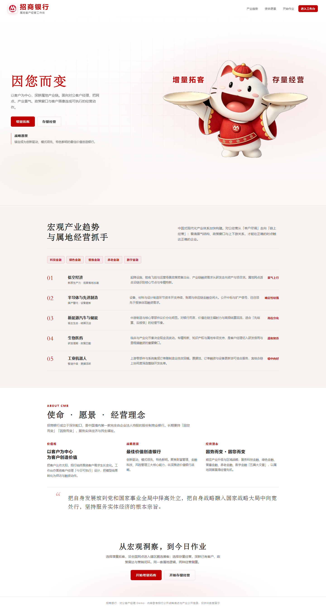

招小帮 · 对公客户经营助手
团队项目AI 驱动的对公客户经营助手 · 招商银行第 10 季数字金融训练营 AI 产品经理赛道全国线下决赛「优秀英才奖」（3 产品 + 3 数据，约 30 小时）
背景
对公客户经理并不缺数据，而是缺少四个连续判断：选谁、为什么现在做、如何触达、如何持续跟进。访谈显示两类不同焦虑：一线客户经理担心 AI 推荐错误且无法向客户解释；中后台人员则被海量信息筛选和重复工作淹没。
任务
在约 30 小时比赛周期内，把「一张地图装所有人」的直觉，收敛成「做优增量 / 盘活存量」两条可执行主线，并让每条主线都能落地为可解释、可复核的看板与 Agent 动作，而不是一个不可信的“一键生成方案”。
做法
参与客户访谈，梳理完整业务流程与泳道图，转为 Web/移动端原型需求。增量侧采用「区域面 → 产业链 → 企业点」下钻，存量侧优先展示经营变化、机会与风险；与 3 名数据同学共同定义模型到产品的接口，把授信额度预测、产业链景气、企业分层与查询能力转成客户筛选、推荐解释与经营方案。模型输出不直接等于业务动作，页面同时呈现推荐原因、数据来源、复核点和下一步任务；授信、风险与复杂客户方案保留人工最终决定。
前端基于我的业务逻辑和需求文档，由生成式 AI 工具协助快速实现并反复验证；授信预测、产业链景气/企业分层、查询 Agent 属于数据同学和团队能力。
成果
与 5 名队友在约 30 小时内交付 Web/移动端 Demo、产品流程图、14 页答辩方案与专家汇报，形成从数据分析、Agent 研判到行动方案落地设计的完整产品闭环；获全国线下决赛「优秀英才奖」。我负责属地产业政策模块、参与客户画像与 UI/UX、承担约三分之一 PPT 设计，并梳理全部流程与 UI 跳转逻辑。经营与政策数据为演示数据，不冒充真实行内数据。
